Pokémon World · BW battle UI reviewPokémon World / issue #336
BW battle UI
A 5–10 minute review of the implemented interface. Start with the three comparisons, then play the clips.
2. Move names, PP and effectiveness
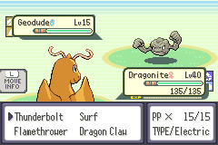
Before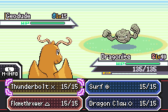
BW3. L-button move information
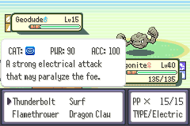
Before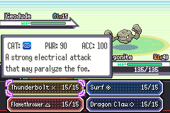
BWLong names and unusual slots
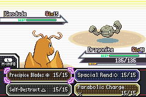
Complete long move names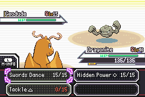
Status, empty and zero-PP slots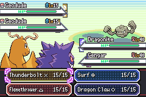
Doubles target selection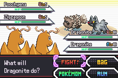
Lance partner battle4. Motion
Lossless sampled emulator frames. These clips show presentation and transitions; they are not hardware frame-rate measurements.
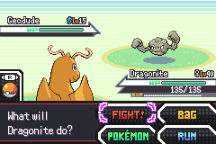
R-button ball throw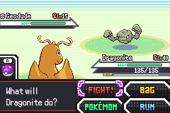
Successful capture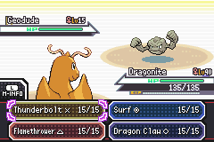
Long ability popup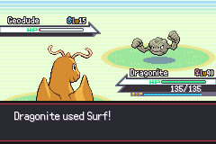
Damage and HP drain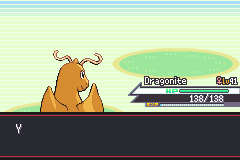
EXP and earned level-up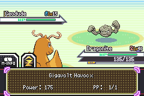
Z-Move activation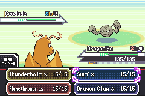
Move details and SwSh Bag return5. Existing flows
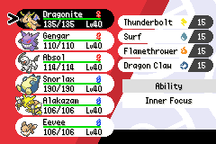
Battle → SwSh Party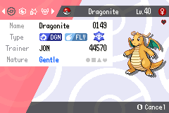
SwSh Summary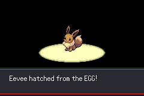
Actual egg hatch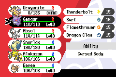
Faint replacement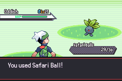
Safari counter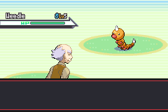
Kanto Old Man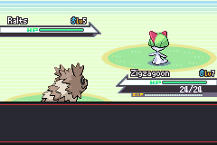
Hoenn Wally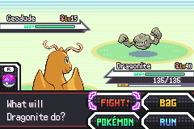
Bug-Catching Contest6. Current environments and outfits
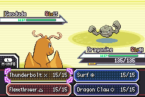
Bright sandDark cave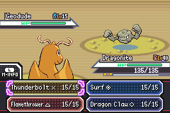
Ice Path — current backgroundSnowy Mt. Silver — current backgroundAll six outfits, both player sprites
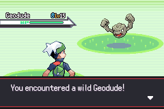
Player 1 / outfit 1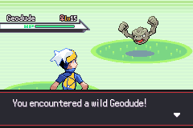
Player 1 / outfit 2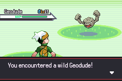
Player 1 / outfit 3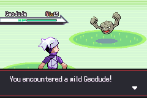
Player 1 / outfit 4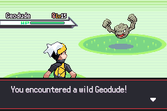
Player 1 / outfit 5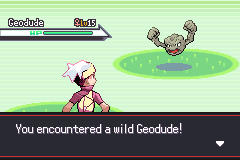
Player 1 / outfit 6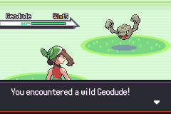
Player 2 / outfit 1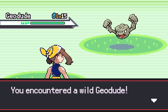
Player 2 / outfit 2Player 2 / outfit 3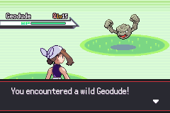
Player 2 / outfit 4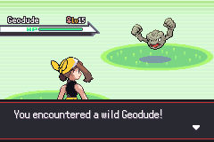
Player 2 / outfit 5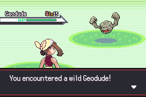
Player 2 / outfit 6